壹 · 北上
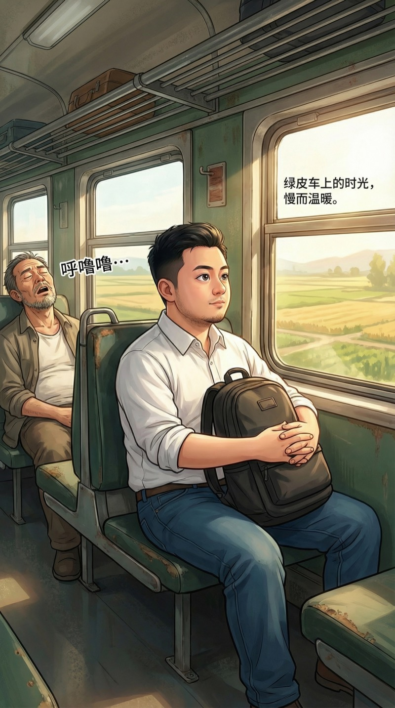
2010年没有京沪高铁——那是2011年的事。所以我现在正以120公里的时速，在一列充满泡面味和脚臭的T110次列车上，向北京做16小时的匀速直线运动。
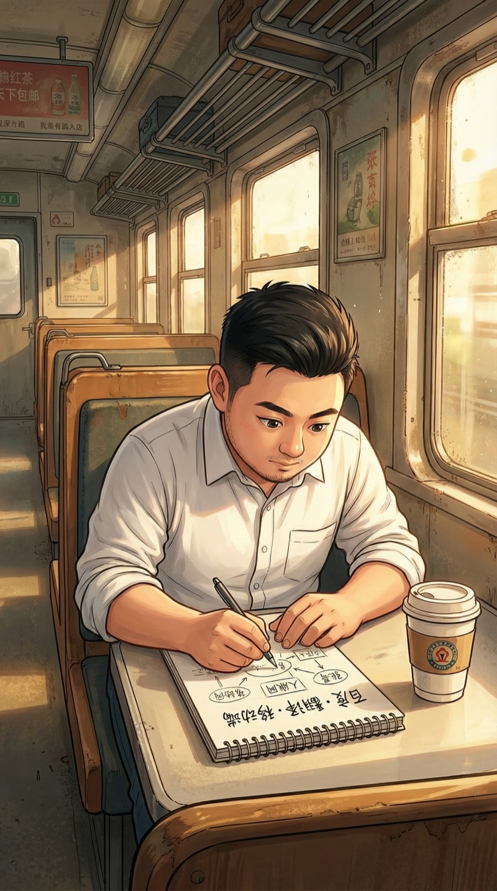
理清思路。张哥说的"李彦宏想见我"大概率不是李彦宏本人——应该是百度移动事业部的人。百度2010年刚开始布局移动端，翻译是他们的重点赛道。他们找我无非两种：收购，或者挖人。
但真正让我睡不着的不是百度。是日历上的那个日期——4月14日。距离现在还有12天。7.1级。玉树。上次我给李老师的预警……他说"上报了"。够吗？
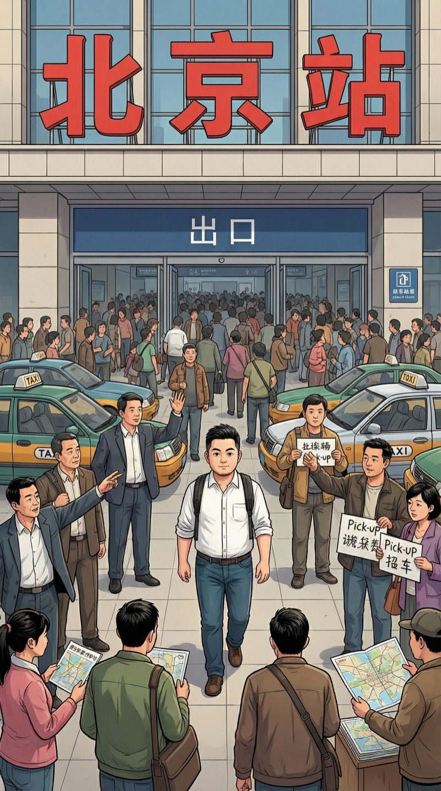
北京站。2026年我每次来北京都飞大兴机场加专车接。2010年的我出了站，面前是六个举着"住宿""打车"牌子的大哥。
差点习惯性掏出手机叫滴滴——然后想起来滴滴要2012年才成立。 😂
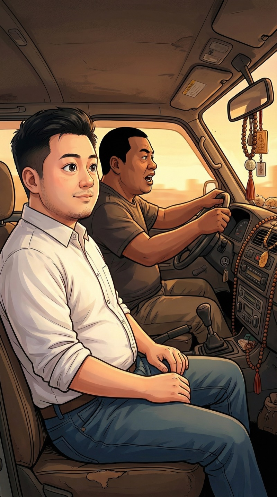
司机："中关村啊？搞IT的吧？上个月拉了一个小伙子，说要做什么'团购网站'，我说年轻人别瞎折腾——"
团购。2010年千团大战正要开打。这位师傅不知道，他嘴里"瞎折腾"的团购，三年后会诞生一家千亿市值公司。
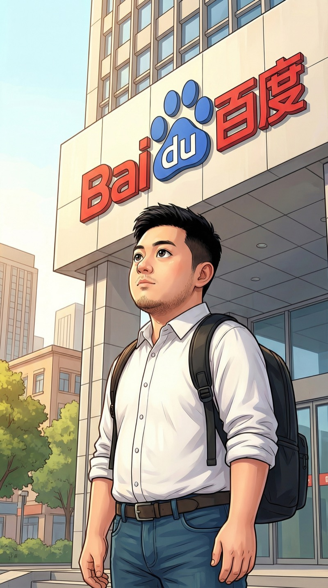
百度。2010年中国互联网的绝对霸主。市值300亿美金。搜索市场份额76%。而谷歌刚退出中国两周——整个市场的蛋糕，百度独享。
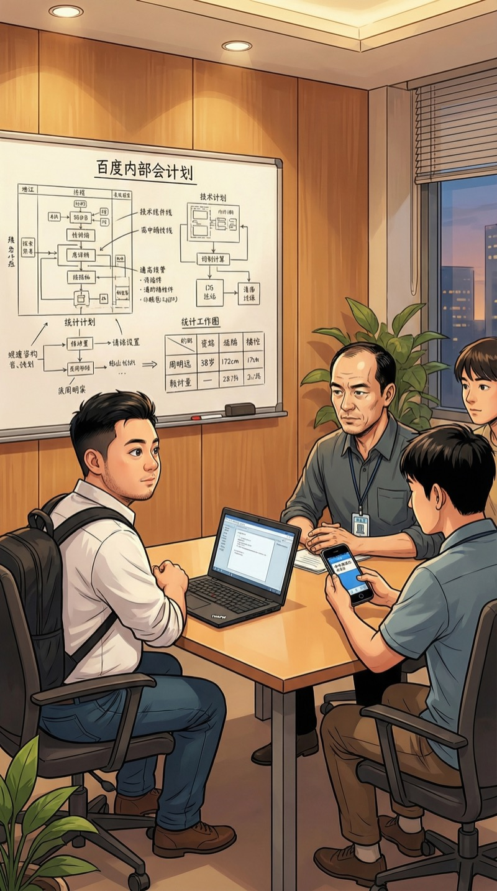
周明远："朱江是吧？我试了你的翻译工具——离线方案做得不错。统计模型用的什么框架？"
周明远，百度移动事业部技术总监。百度2010年的移动端还很弱——大部分精力在搜索。但他们已经嗅到了移动互联网的味道。
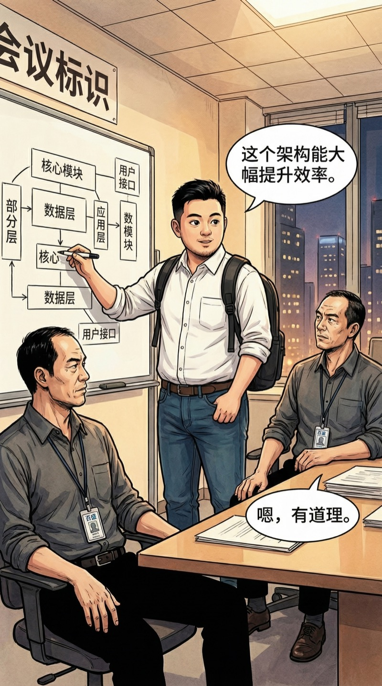
我："离线翻译的核心不是算法——是数据压缩。把整本词库加语法树压缩到30MB以内，在iPhone 3GS的128MB内存里跑得动。这才是真正的技术门槛。"
这些知识在2026年是基础课。但2010年移动端的内存管理是真正的硬核问题——我在白板上画的东西，百度可能要花两个月才能研究出来。
⚡ 决策点 7
百度提出收购翻译App + 年薪40万入职方案
周明远："百度收购你的翻译App，你加入我们团队负责移动端翻译。薪酬——年薪40万，外加期权。"
来了。果然是收购加招安。2010年年薪40万，在百度算高级工程师待遇了。但我知道两件事他不知道：第一，百度翻译确实会在2011年上线，而且会碾压所有独立App。第二——翻译从来不是我的终局。
我："周总，谢谢您的认可。但我不打算卖。不过我有个替代方案——技术授权。我把离线翻译的核心模块授权给百度使用，你们付技术授权费。我保持独立，你们拿到技术。双赢。"
2010年的互联网公司还不太习惯"技术授权"这种模式——这更像是2015年以后的玩法。但周明远是技术人，他能理解价值。
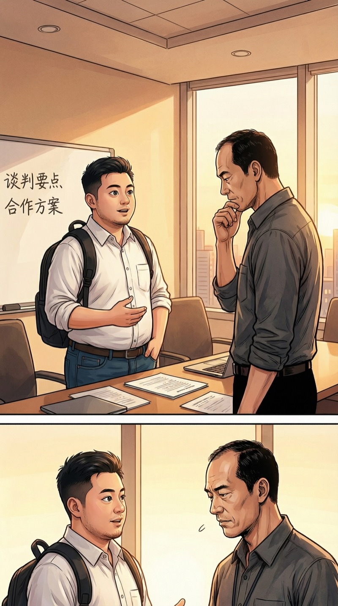
周明远："技术授权……有意思。这个方案我需要跟上面汇报。你报个价？"
我："授权费可以谈。但我有一个条件——百度翻译上线后，我的独立App继续运营，你们不做排他限制。"
这个条件其实无所谓——百度翻译一上线，免费加品牌加持，我的付费App自然会被碾压。但我要的是"授权费加继续独立"的身份。钱不重要，自由重要。
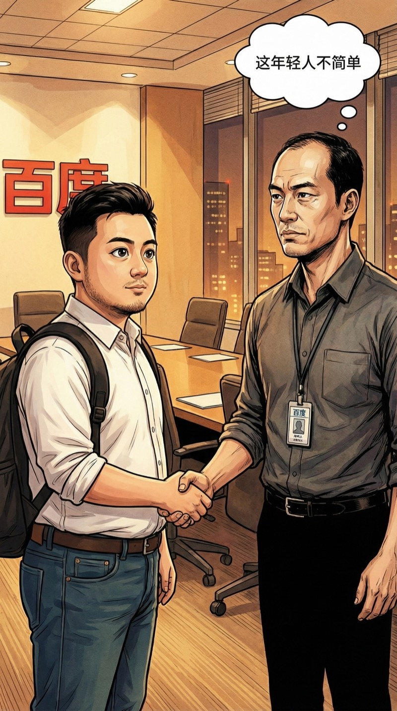
走出百度的门，我拿到了三样东西：可能的技术授权费，百度内部人脉，和一个不错的名声——一个敢对百度说"不"的小App开发者。这比40万年薪值钱一百倍。
出了百度大门，掏出诺基亚想打车——看了看四周，叹口气："又得找黑车了。2010年真的需要一个打车软件。等等……这是不是一个商业机会？不，忍住。不能什么都做。" 😂
张哥："怎么样？百度那边聊得如何？"
我："没卖。提了技术授权。"
张哥（涮毛肚的手停了一下）："你拒绝了百度的收购？"
我（笑）："严格来说是给了他们一个更好的选择。"
张哥看我的眼神变了。不是"这小子不识好歹"，而是"这小子有想法"。在投资圈，"敢拒绝巨头"本身就是一种信号——说明你有更大的野心。
张哥："明天下午互联网沙龙，你一定要来。有几个你一定想认识。"
张哥（压低声音）："有个叫苏小慧的，做社交方向的，很有想法。她在找技术合伙人。"
社交方向？2010年做社交……微信2011年1月上线。现在进场——要么太早，要么正好赶上。
我筷子上夹着一片毛肚，对着火锅出神。张哥："你的肉老了。"我回神："啊？"——创业者火锅局：肉永远煮过头。 😂
贰 · 沙龙
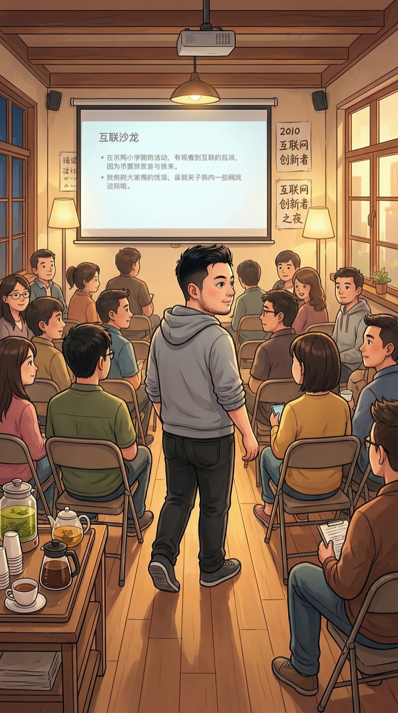
二十来个人。放在2026年这叫"闭门行业沙龙"。放在2010年——这可能是整个中国互联网圈最密集的人才浓度。在座的某几个人，十年后会出现在《财富》杂志封面上。
苏小慧："你就是做离线翻译的朱江？我叫苏小慧，现在在琢磨移动社交——做一个图片分享社区。"
我："图片分享？类似……Flickr移动版？"
苏小慧（眼睛亮了）："差不多，但更轻量。手机拍照加滤镜加分享——一步到位。"
滤镜加图片分享加社交等于Instagram。2010年10月上线，估值几年后过百亿美金。苏小慧的方向……完全正确。
我："你考虑过正方形裁切吗？统一比例加滤镜，反而能把低像素的缺点变成'风格化'的优点。"
苏小慧（停下笔）："正方形？为什么？"
我："视觉统一感。心理学上叫'框架效应'——同样的照片，加个框就变成了艺术。"
我在2026年的产品课上讲过这个案例——Instagram早期为什么成功。现在我在2010年，跟一个做着同样事情的人讲这些。历史的漩涡真他妈奇妙。 😂
⚡ 决策点 8
苏小慧邀请五五分做中国版Instagram
苏小慧："朱江，我认真的——你有兴趣做我的技术合伙人吗？五五分。"
五五分做一个中国版Instagram。百亿级的机会。但中国的图片社交最终不是独立App赢了，是微信朋友圈。而且……我有更想做的事。
我："小慧，你的方向是对的。但我不是最合适的合伙人。不过我可以给你一个建议——先做MVP，先上线，别追求完美。2010年移动端的窗口期很短。"
苏小慧："你说的'窗口期很短'是什么意思？"
我（笑了）："这个赛道太好了。全世界的聪明人都看到了——你要跑得比他们快。"
Instagram将在6个月后上线。但我不能告诉她。我能做的，是让她尽快动起来。也许——在这个时间线里，中国版的"图片社交"会走出不一样的路。
⚡ 决策点 9
被推上台——是否展示超前洞察？
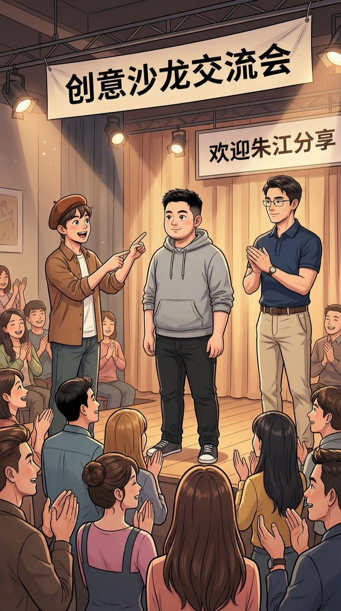
主持人："据说拒绝了百度收购的'疯子'——朱江，上来聊两句？"
张哥你……真会给人挖坑。"拒绝百度收购"这种事在2010年的互联网圈传播速度，大概相当于2026年上了微博热搜。
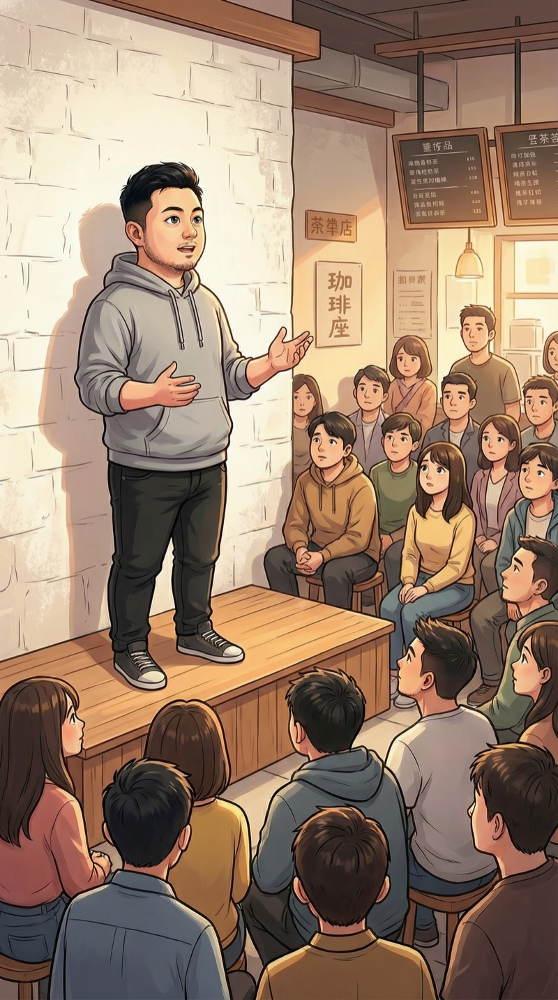
我："我不是疯子——我只是算过一笔账。翻译App的天花板很低。但移动互联网的天花板……没有上限。我分享三个判断。"
小心。只说趋势，不说细节。像"先知"一样模糊，像"分析师"一样理性。
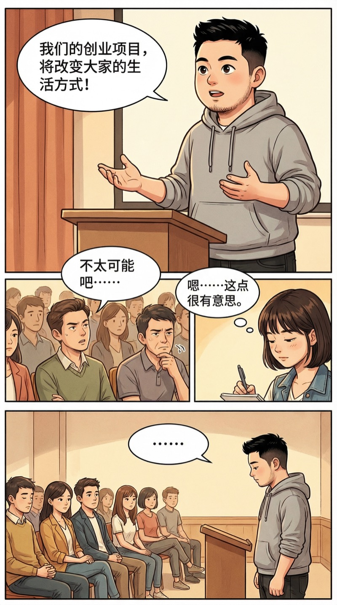
判断一："两年内，手机上网的人数会超过电脑上网的人数。"
台下有人摇头："不可能，手机屏幕那么小。"
判断二："三年内，会出现一个App，让所有人放弃短信。"
台下窃窃私语。苏小慧在角落认真记笔记。
判断三："五年内，一个人的手机会比他的钱包更重要——因为手机就是钱包。"
全场安静了几秒。
2012年移动网民超PC。2011年微信上线。2013年余额宝加微信支付。对他们来说——是还没发生的未来。
有人举手："那你为什么不去做这些？"我认真回答："因为……我还没想好做哪个。"全场笑了。 😂
二十分钟前我是"那个做翻译App的"。现在我是"拒绝百度加说了三个疯狂判断的年轻人"。在2010年的互联网圈，"有争议"比"有实力"更有传播力。
苏小慧："你那三个判断——我信第二个。因为我也这么觉得。"
我："那就跑快点。赛道不等人。"
苏小慧（回头笑）："对了——你说的'正方形裁切'，我今晚回去就改方案。谢了。"
看着她走远的背影。2010年的北京夜晚，空气比2026年冷但也比2026年干净。一个有想法的人，一个对的方向，一个即将到来的时代。有些相遇，本身就是一种答案。
张哥："今晚你表现不错。但有两个人在台下记了很多笔记——一个是苏小慧，另一个……是做搜索的一家公司的人。你的三个判断如果传出去，会有人来找你。"
张哥的意思是——我可能太高调了。2010年互联网圈子不大，消息传得快。"拒绝百度加大胆预判"这两件事传出去，会引来关注——不一定都是好的关注。
十二张名片。二十岁到四十岁的互联网人。创业者、投资人、技术极客、产品经理。这些人里，有几个名字我在2026年见过——在福布斯榜上。此刻他们跟我一样，住着廉价酒店，吃着泡面，做着改变世界的梦。唯一的区别是——我知道他们的梦有些会成真。
叁 · 倒计时
4月8日。距离玉树地震还有6天。上次给李老师的预警信——他说上报了，建议加强监测。但"加强监测"和"提前疏散"是两回事。
⚡ 决策点 10
如何加强预警——冒暴露风险再次联系李老师？
我："李老师，上次关于青海的数据分析……新的计算结果显示，4月12日到16日之间，风险等级显著升高。我强烈建议——如果可能的话——通知当地做一次疏散演练。"
我在赌。给出这么精确的时间窗口，任何真正的地质学家都会觉得"不合理"——统计模型不可能精确到天。但如果李老师信任我第一次的判断……也许他会再信一次。
李老师："小朱……你给的时间窗这么精确，我很难跟领导交代。但——上一次你的判断基本准确。这样，我个人名义给当地的同事打个电话，建议他们做一次'例行检查'。能做到什么程度……我不敢保证。"
"不敢保证"。这四个字的重量，他不知道。但我知道。
我："谢谢您，李老师。真的。"
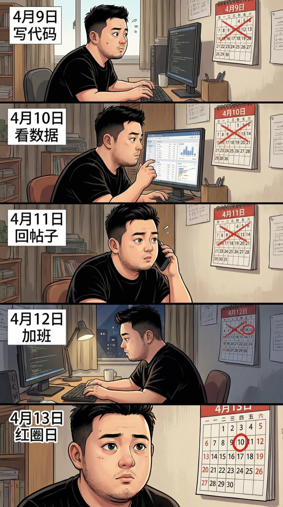
4月9日、10日、11日、12日、13日。日历上的日子一天天被划掉。每天照常工作——写代码、看数据、回论坛帖子——但眼角总会瞟向日历。红圈越来越近。
等待一场你知道会来的灾难——大概就像知道考试答案但不能告诉别人。只是——这次的"考试"，关系的是人命。
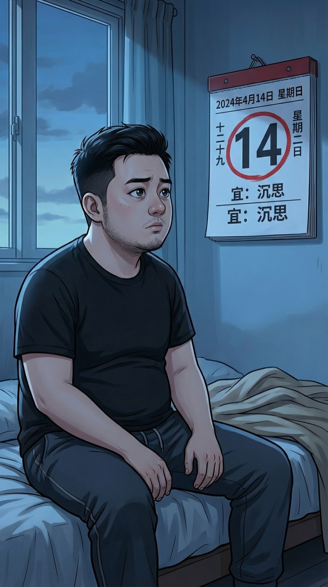
今天。
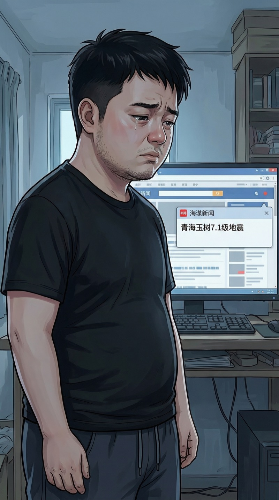
2010年4月14日，7时49分。7.1级。我什么都知道。但我改变不了地壳的运动。
死亡人数不断上升。2698人。我记得这个数字——因为在2026年的历史课本上读过。每一个数字背后都是一个活生生的人。
李老师："小朱……地震了。你的预测时间窗完全准确。我的同事……他前天做了一次地质巡检，发现了前兆异常，通知了一个临近的村子提前转移到空旷地带。村里108口人。都在。"
108个人。一个村子。前天——4月12日——正好在我给的时间窗开始那天。李老师的同事……真的去了。
李老师："谢谢你，小朱。不知道你的模型是怎么算出来的……但这108个人的命，有你一份功劳。"
108。2698分之108。我什么都知道，但只救出了108个。该满足吗？该自责吗？都有。这就是重生者的代价——知道一切，却改变不了大多数。但108个人……够了。这一趟重生，就算什么都不做了，这108条命——够了。
擦干眼泪。重生第21天。108条命是底线。接下来——我还有更多的事要做。更多的人可以影响。更多的历史……可以轻轻地推一下。
⚡ 决策点 11
翻译App危机——百度翻译提前内测上线
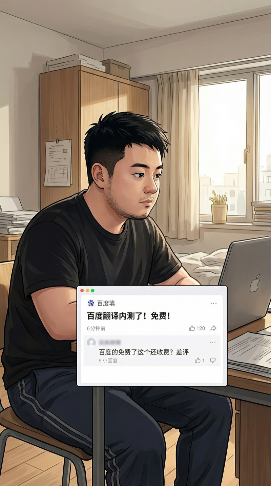
来了。比我记忆中早了几个月——也许是因为我给了他们技术授权？历史因为我的介入发生了偏移。百度翻译免费加品牌碾压，我的付费App……曲线已经开始掉了。
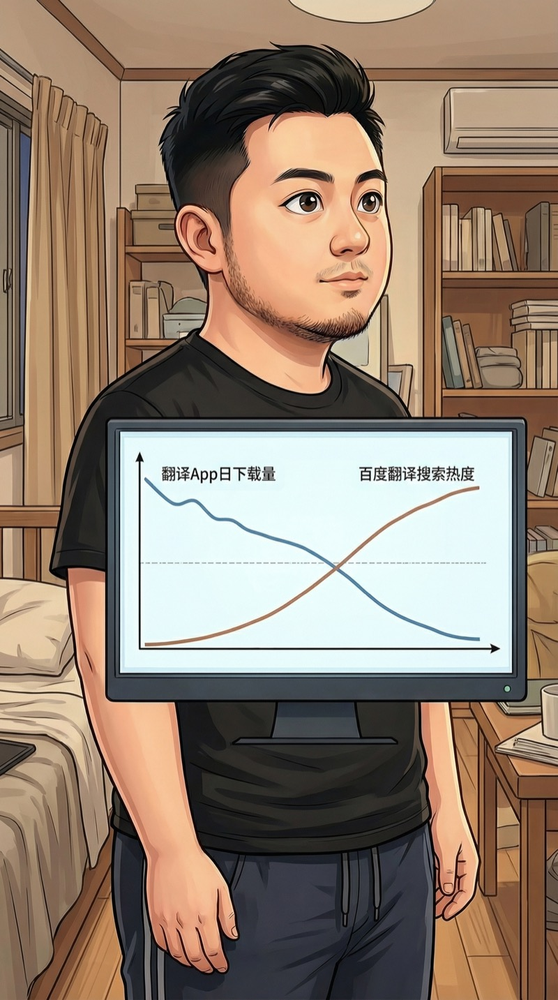
DAU从峰值掉了40%。Pro版收入本周只有上周的一半。一个月后——这条App就会变成一具漂亮的尸体。但这在我的计划之中。翻译，从第一天起就不是终局。它是——敲门砖。现在门开了，敲门砖可以放下了。
⚡ 决策点 12
翻译已死，下一步做什么？
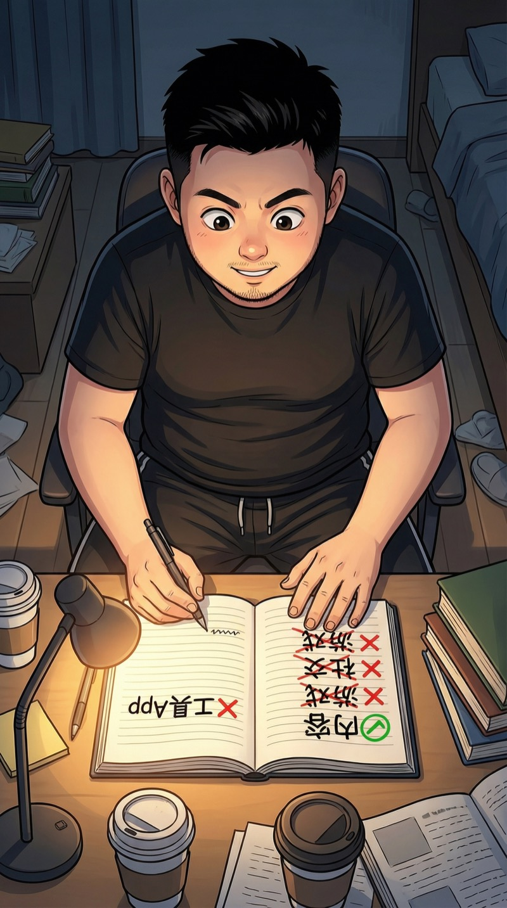
工具打不过巨头。社交有微信。游戏不是我的基因。但有一个领域——2010年刚刚萌芽，十年后会成为万亿市场——而且，是我这辈子最熟悉的领域。
内容。
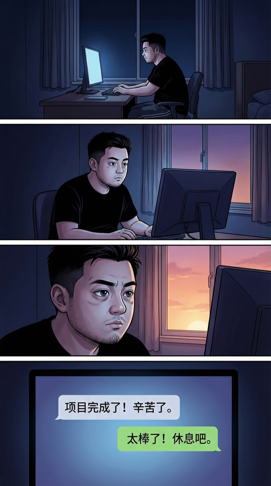
张哥（消息）："朱江，你沙龙上说的三个判断在圈里传开了。有人觉得你是天才，有人觉得你是骗子。下周我带你见一个人——他手上有一笔基金，专投'疯子'。"
苏小慧（消息）："朱江！我的图片App第一个版本做出来了！正方形裁切效果太好了！你得看看！！！"
凌晨四点。2010年4月的最后一天。窗外上海的天开始发亮。我的翻译App正在死去。108个玉树村民活着。张哥说有"疯子基金"。苏小慧做出了第一个版本。而我——刚刚想清楚了自己这辈子真正要做的事。
重来，第21天。一切刚刚开始。
❓ "疯子基金"的投资人是谁？
❓ 朱江要做的"内容"具体是什么？
❓ 苏小慧的App会成功吗？
第三章 · 完
第四章即将更新